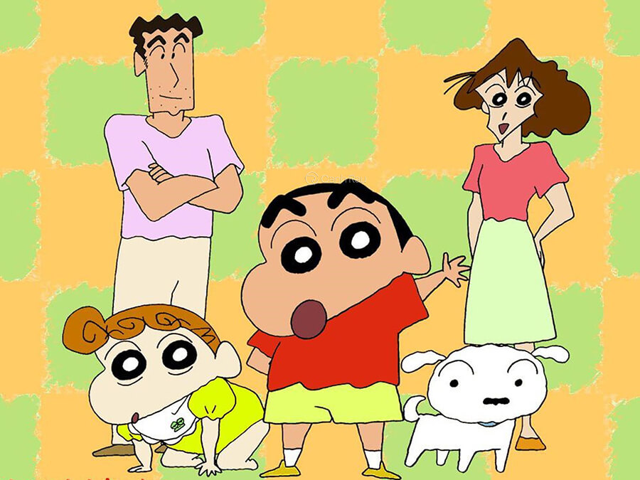

Top anime hài hước khiến bạn cười vui vẻ suốt cả ngày
-Vị Thần Lang Thang là bộ phim anime hài hước đầu tiên mà chúng tôi muốn giới thiệu đến các bạn. Bộ phim kể về nhân vật Yato – vị thần nghèo đến nỗi không có một nơi nào để trú ngụ. Yato tuy nghèo khó nhưng lại rất siêng năng. Anh làm tất cả các công việc, giúp đỡ rất nhiều người nhưng chỉ lấy 5 yên để duy trì cuộc sống.
-Vào một ngày nọ, khi Yato đang truy đuổi yêu quái Ayakashi, anh vô tình khiến cho hồn phách của cô nữ sinh trung học Hiyori có thể rời khỏi thân xác. Để khắc phục lỗi lầm mà mình gây ra, Yato đã lên đường và tham gia hành trình giúp linh hồn của Hiyori quay về cơ thể. Trong cuộc hành trình, cả hai đã gặp gỡ và kết bạn thêm rất nhiều vị thần khác. Họ cùng chiến đấu hết mình để tiêu diệt yêu quái Ayakashi.
Bộ phim Vị Thần Lang Thang là một bộ phim anime được khán giả yêu thích
-Từ đây, thân phận của Yato cũng dần hé lộ. Yato là ai? Liệu anh có thể giúp linh hồn của Hiyori quay về với thể xác không? Các bạn hãy cùng chúng tôi theo dõi bộ phim anime vui vẻ này để tìm ra câu trả lời nhé!
-Bộ phim anime hài hước tiếp theo đó chính là Bộ Tứ Dị Giới. Đây cũng chính là bộ phim hoạt hình Nhật Bản mang phong cách chibi đầy mới lạ hiện nay. Nội dung xoay quanh câu chuyện cuộc sống trung học của những các nhân vật đến từ nhiều thế giới khác nhau.
Bộ phim hoạt hình mang phong cách chibi
-Tại đây, các nhân vật chính của các thế giới khác nhau như KonoSuba, Overlord hay Tanya chiến ký,…cùng được đưa vào một thế giới mới. Họ cùng trải qua cuộc sống của những học sinh trung học với sự hồn nhiên và hài hước. Nhận thức và sức mạnh của mỗi người đều khác nhau nên khi đến thế giới mới này những câu chuyện hài hước và rắc rối luôn vây xung quanh họ. Đó là những câu chuyện siêu thú vị nào. Hãy cùng tôi theo dõi diễn biến bộ phim ngay nhé.
-Thánh Hoàn Hảo Sakamoto là bộ phim anime hài hước kể về Sakamoto – một chàng thanh niên đẹp trai và học giỏi. Không những thế, bất cứ việc gì anh chàng cũng có thể làm được. Chính vì sự hoàn hảo này mà phụ huynh cũng bị anh làm cho mê mẩn. Những tay giang hồ cũng không ai dám bắt nạt anh.
Thánh Hoàn Hảo Sakamoto là cái tên được tìm kiếm nhiều trên các web phim
-Thế nhưng, thật sự có một người hoàn hảo vậy trên thế giới không? Sakamoto có thân phận như thế nào? Cùng chúng tôi đi tìm chân tướng qua bộ phim anime hài hước này nhé.
-Đây là một bộ phim anime học đường hài hước kể về cô nàng Uzaki Hana cùng hành trình lôi kéo Sakurai Shinichi – một đàn anh cùng trường ra khỏi thế giới cô độc, tự kỷ do chính anh đã tạo ra. Hành trình này bắt đầu khi Uzaki phát hiện đàn anh của mình khi nào cũng lững thững, không hòa nhập với bất kỳ ai. Vì thế, cô nàng cho rằng người anh của mình bị mắc chứng tự kỷ và cô buộc phải kéo anh trở về cuộc sống bình thường.
Hành trình Uzaki kéo Shinichi ra khỏi thế giới cô độc của anh
-Uzaki Hana lên một bản kế hoạch để đàn anh Shinichi có thể tận hưởng cuộc sống vui tươi, sống động xung quanh. Cuộc sống đang vô cùng tĩnh lặng của Shinichi cũng chính vì thế mà bị đảo lộn. Thế nhưng, những hành động của Uzaki có thể giúp được Shinichi thoát khỏi thế giới cô độc và hòa nhập với thế giới muôn màu không?
-Câu Lạc Bộ Vạn Năng là một bộ phim hài hước, học đường nhưng lại đem đến nhiều giá trị ý nghĩa. Phim xoay quanh Lữ đoàn SKET – một câu lạc bộ đặc biệt luôn giúp đỡ các học sinh của trường Kaimei.
Bộ ba nhân vật chính trong bộ phim Câu Lạc Bộ Vạn Năng
-Câu lạc bộ SKET Dance gồm có 3 thành viên. Đó là Fujisaki Yusuke có biệt danh là Bossun, thủ lĩnh của nhóm. Hai người bạn đồng hành còn lại của anh chính là Onizuka Hime và Usui Kazuyoshi. Câu lạc bộ được lập ra nhằm tư vấn và giúp đỡ cho những người gặp khó khăn, nhặt rác trên sân trường hay tìm đồ thất lạc. Bất kể mưa gió hay sự kì thị từ phía hội học sinh, câu lạc bộ SKET vẫn năng nổ, nhiệt tình và hết mình giúp đỡ người khác.
-Vua Rừng Tar-chan kể về Tar-chan – một anh chàng được nuôi lớn từ con tinh Etekichi tại xavan Châu Phi và những cuộc phiêu lưu của anh chàng. Tar-chan đã làm mọi cách để bảo vệ ngôi nhà, người vợ tên là Jane và những loài động vật là bạn của anh ấy. Tuy nhiên, sau tất cả mọi việc ấy ấy làm thì kết quả lại đi ngược lại và vô cùng hài hước, gây cười.
Bộ phim Vua Rừng Tar-chan
-Nếu bạn đang tìm kiếm những bộ phim anime hài hước để giải trí trong những ngày cách ly bởi mùa dịch thì Vua Rừng Tar-chan là một bộ phim siêu thú vị mà bạn không nên bỏ qua. Bộ phim anime hài hước, vui vẻ này chắc chắc sẽ không làm bạn phải thất vọng.
-Bộ phim là một câu chuyện được chuyển thể từ truyện manga cùng tên của tác giả Izumi Tsubaki. Nội dung phim xoay quanh nữ sinh nhút nhát Sakura khi cô quyết định thổ lộ những tình cảm thầm kín trong lòng mình với chàng trai cùng lớp Nozaki.
Monthly Girls’ Nozaki-kun là bộ phim thuộc top anime hài hước nhất
-Thế nhưng, một tình huống hài hước xảy ra khi anh chàng Nozaki lại hiểu nhầm rằng Sakura có tình cảm với tác phẩm truyện tranh vừa được anh sáng tác. Điều này, khiến Sakura phải tìm đủ mọi cách để chứng minh tình cảm của mình. Và đây cũng chính là khoảng thời gian để kéo gần tình cảm của hai nhân vật chính. Cuối cùng họ có thể hiểu được tình cảm chân thành của đối phương không?
-Là một trong top 10 bộ phim anime hài hước được yêu thích và gắn liền với tuổi thơ của nhiều người. Shin: Cậu Bé Bút Chì kể về những mẩu chuyện thú vị, tinh nghịch diễn ra hàng ngày của một cậu bé 5 tuổi tên là Shin-chan. Bộ phim mang đến một làn gió mới cho khán giả trên màn ảnh nhỏ. Khi liên tục xuất hiện những tình huống gây cười.

Bộ phim từng gây “sốt” trong một thời gian dài kể từ khi ra mắt
-Bộ phim còn tái diễn lại cuộc sống hàng ngày của Shin và những người thân bên cạnh bằng những tình tiết gần gũi, đời thường. Tuy nhiên, cách ứng xử ngô nghê, đáng yêu và vui nhộn của Shin mới là những chi tiết hài hước nhất. Sẽ thật nuối tiếc biết bao khi bạn bỏ qua một bộ phim siêu hấp dẫn như thế này đấy.
-Bộ phim anime hài hước tiếp theo mà chúng tôi muốn giới thiệu đến bạn đó chính là Công Viên Rực Rỡ của đạo diễn Takemoto Yasuhiro. Phim có nội dung kể về Seiya – một anh chàng đẹp trai và học giỏi. Thế nhưng, anh lại bị mắc chứng bệnh khó chữa là “cuồng” bản thân.
Bộ phim anime hài hước Công viên rực rỡ của đạo diễn Takemoto Yasuhiro
-Những tình huống gây cười diễn ra khi một cô nữ sinh tên là Sento vì si mê anh chàng Seiya Kanie nên đã tìm mọi cách để chinh phục. Cô sẵn sàng cầm súng uy hiếp anh nếu anh không đồng ý trở thành bạn trai của mình. Sento cũng đem đến cho người trong mộng của mình biết bao điều thú vị khi dẫn anh đến với thế giới pháp thuật. Tại đây, Kanie được làm quen với nhiều loài sinh vật kỳ lạ tại một công viên hoang tàn và không được mọi người biết đến. Anh cũng được giao nhiệm vụ quảng bá và kiếm khách cho công viên phép thuật kỳ lạ này.
-Liệu rằng sau tất cả, Cô nàng Sento có chinh phục được anh chàng Kanie không? Mời các bạn hãy đón xem bộ phim Công Viên Rực Rỡ để biết kết cục của cặp đôi này nhé!
-Phần tiếp theo trong series những anime hài hước hay nhất mà chúng tôi muốn giới thiệu đến các bạn đó chính là câu chuyện của cô nàng Yoshiko Hanabatake trong bộ phim hoạt hình Nhật Bản Aho Girl. Cô gái này vô cùng ngốc nghếch, ngốc đến mức hết phần thiên hạ. Không giỏi giao tiếp, lại liên tiếp đạt thành tích điểm 0 tuyệt đối trong tất cả môn học Yoshiko đã khiến người mẹ mất hết hy vọng về mình.
Phim anime Aho Girl – Cô nàng ngốc nghếch
-Ở cạnh nhà cô chính là anh bạn từ thuở ấu thơ Akuru Akutsu, được bà mẹ chấm điểm làm con rể tương lai. Trái ngược với Yoshiko, Akuru Akutsu rất hiếu học và có chút bá đạo. Cậu trở thành người có thể kiểm soát được những hành vi lố bịch của cô nàng, như công tắc “stop” chấm dứt sự điên rồ ngu ngốc mà cô gây ra. Liệu rằng những cố gắng của Akuru có thay đổi được Yoshiko theo hướng tích cực hơn? Cô nàng ngốc có thâm niên có chinh phục được cậu con rể tương lai trong mắt mẹ hay không? Hãy đón xem Aho Girl một trong những bộ anime hài hước hay nhất này để có lời giải đáp.